25. Crops and Irrigation¶
25.1. Summary of CLM5.0 updates relative to the CLM4.5¶
We describe here the complete crop and irrigation parameterizations that appear in CLM5.0. Corresponding information for CLM4.5 appeared in the CLM4.5 Technical Note (Oleson et al. 2013).
CLM5.0 includes the following new updates to the CROP option, where CROP refers to the interactive crop management model and is included as an option with the BGC configuration:
- New crop functional types
- All crop areas are actively managed
- Fertilization rates updated based on crop type and geographic region
- New Irrigation triggers
- Phenological triggers vary by latitude for some crop types
- Ability to simulate transient crop management
- Adjustments to allocation and phenological parameters
- Crops reaching their maximum LAI triggers the grain fill phase
- Grain C and N pools are included in a 1-year product pool
- C for annual crop seeding comes from the grain C pool
- Initial seed C for planting is increased from 1 to 3 g C/m^2
These updates appear in detail in the sections below. Many also appear in Levis et al. (2016).
25.2. The crop model¶
25.2.1. Introduction¶
Groups developing Earth System Models generally account for the human footprint on the landscape in simulations of historical and future climates. Traditionally we have represented this footprint with natural vegetation types and particularly grasses because they resemble many common crops. Most modeling efforts have not incorporated more explicit representations of land management such as crop type, planting, harvesting, tillage, fertilization, and irrigation, because global scale datasets of these factors have lagged behind vegetation mapping. As this begins to change, we increasingly find models that will simulate the biogeophysical and biogeochemical effects not only of natural but also human-managed land cover.
AgroIBIS is a state-of-the-art land surface model with options to simulate dynamic vegetation (Kucharik et al. 2000) and interactive crop management (Kucharik and Brye 2003). The interactive crop management parameterizations from AgroIBIS (March 2003 version) were coupled as a proof-of-concept to the Community Land Model version 3 [CLM3.0, Oleson et al. (2004) ] (not published), then coupled to the CLM3.5 (Levis et al. 2009) and later released to the community with CLM4CN (Levis et al. 2012), and CLM4.5BGC. Additional updates after the release of CLM4.5 were available by request (Levis et al. 2016), and those are now incorporated into CLM5.
With interactive crop management and, therefore, a more accurate representation of agricultural landscapes, we hope to improve the CLM’s simulated biogeophysics and biogeochemistry. These advances may improve fully coupled simulations with the Community Earth System Model (CESM), while helping human societies answer questions about changing food, energy, and water resources in response to climate, environmental, land use, and land management change (e.g., Kucharik and Brye 2003; Lobell et al. 2006). As implemented here, the crop model uses the same physiology as the natural vegetation, though uses different crop-specific parameter values, phenology, and allocation, as well as fertilizer and irrigation management.
25.2.2. Crop plant functional types¶
To allow crops to coexist with natural vegetation in a grid cell, the vegetated land unit is separated into a naturally vegetated land unit and a managed crop land unit. Unlike the plant functional types (pfts) in the naturally vegetated land unit, the managed crop pfts in the managed crop land unit do not share soil columns and thus permit for differences in the land management between crops. Each crop type has a rainfed and an irrigated pft that are on independent soil columns. Crop grid cell coverage is assigned from satellite data (similar to all natural pfts), and the managed crop type proportions within the crop area is based on the dataset created by Portmann et al. (2010) for present day. New in CLM5, crop area is extrapolated through time using the dataset provided by Land Use Model Intercomparison Project (LUMIP), which is part of CMIP6 Land use timeseries (Lawrence et al. 2016). For more details about how crop distributions are determined, see Chapter 26.
CLM5 includes eight actively managed crop types (temperate soybean, tropical soybean, temperate corn, tropical corn, spring wheat, cotton, rice, and sugarcane) that are chosen based on the availability of corresponding algorithms in AgroIBIS and as developed by Badger and Dirmeyer (2015) and described by Levis et al. (2016). The representations of sugarcane, rice, cotton, tropical corn, and tropical soy are new in CLM5. Sugarcane and tropical corn are both C4 plants and are therefore represented using the temperate corn functional form. Tropical soybean uses the temperate soybean functional form, while rice and cotton use the wheat functional form. In tropical regions, parameter values were developed for the Amazon Basin, and planting date window is shifted by six months relative to the Northern Hemisphere.
In addition, CLM’s default list of plant functional types (pfts) includes an irrigated and unirrigated unmanaged C3 crop (Table 25.1) treated as a second C3 grass. The unmanaged C3 crop is only used when the crop model is not active and has grid cell coverage assigned from satellite data, and the unmanaged C3 irrigated crop type is currently not used since irrigation requires the crop model to be active. The default list of pfts also includes twenty-three inactive crop pfts that do not yet have associated parameters required for active management. Each of the inactive crop types is simulated using the parameters of the spatially closest associated crop type that is most similar to the functional type (e.g., C3 or C4), which is required to maintain similar phenological parameters based on temperature thresholds. Information detailing which parameters are used for each crop type is included in Table 25.1. It should be noted that pft-level history output merges all crop types into the actively managed crop type, so analysis of crop-specific output will require use of the land surface dataset to remap the yields of each actively and inactively managed crop type. Otherwise, the actively managed crop type will include yields for that crop type and all inactively managed crop types that are using the same parameter set.
| ITV | Plant function types (PFTs) | Management Class | Crop Parameters Used |
|---|---|---|---|
| 15 | c3 unmanaged rainfed crop | none | not applicable |
| 16 | c3 unmanaged irrigated crop | none | not applicable |
| 17 | rainfed temperate corn | active | rainfed temperate corn |
| 18 | irrigated temperate corn | active | irrigated temperate corn |
| 19 | rainfed spring wheat | active | rainfed spring wheat |
| 20 | irrigated spring wheat | active | irrigated spring wheat |
| 21 | rainfed winter wheat | inactive | rainfed spring wheat |
| 22 | irrigated winter wheat | inactive | irrigated spring wheat |
| 23 | rainfed temperate soybean | active | rainfed temperate soybean |
| 24 | irrigated temperate soybean | active | irrigated temperate soybean |
| 25 | rainfed barley | inactive | rainfed spring wheat |
| 26 | irrigated barley | inactive | irrigated spring wheat |
| 27 | rainfed winter barley | inactive | rainfed spring wheat |
| 28 | irrigated winter barley | inactive | irrigated spring wheat |
| 29 | rainfed rye | inactive | rainfed spring wheat |
| 30 | irrigated rye | inactive | irrigated spring wheat |
| 31 | rainfed winter rye | inactive | rainfed spring wheat |
| 32 | irrigated winter rye | inactive | irrigated spring wheat |
| 33 | rainfed cassava | inactive | rainfed rice |
| 34 | irrigated cassava | inactive | irrigated rice |
| 35 | rainfed citrus | inactive | rainfed spring wheat |
| 36 | irrigated citrus | inactive | irrigated spring wheat |
| 37 | rainfed cocoa | inactive | rainfed rice |
| 38 | irrigated cocoa | inactive | irrigated rice |
| 39 | rainfed coffee | inactive | rainfed rice |
| 40 | irrigated coffee | inactive | irrigated rice |
| 41 | rainfed cotton | active | rainfed cotton |
| 42 | irrigated cotton | active | irrigated cotton |
| 43 | rainfed datepalm | inactive | rainfed cotton |
| 44 | irrigated datepalm | inactive | irrigated cotton |
| 45 | rainfed foddergrass | inactive | rainfed spring wheat |
| 46 | irrigated foddergrass | inactive | irrigated spring wheat |
| 47 | rainfed grapes | inactive | rainfed spring wheat |
| 48 | irrigated grapes | inactive | irrigated spring wheat |
| 49 | rainfed groundnuts | inactive | rainfed rice |
| 50 | irrigated groundnuts | inactive | irrigated rice |
| 51 | rainfed millet | inactive | rainfed tropical corn |
| 52 | irrigated millet | inactive | irrigated tropical corn |
| 53 | rainfed oilpalm | inactive | rainfed rice |
| 54 | irrigated oilpalm | inactive | irrigated rice |
| 55 | rainfed potatoes | inactive | rainfed spring wheat |
| 56 | irrigated potatoes | inactive | irrigated spring wheat |
| 57 | rainfed pulses | inactive | rainfed spring wheat |
| 58 | irrigated pulses | inactive | irrigated spring wheat |
| 59 | rainfed rapeseed | inactive | rainfed spring wheat |
| 60 | irrigated rapeseed | inactive | irrigated spring wheat |
| 61 | rainfed rice | active | rainfed rice |
| 62 | irrigated rice | active | irrigated rice |
| 63 | rainfed sorghum | inactive | rainfed tropical corn |
| 64 | irrigated sorghum | inactive | irrigated tropical corn |
| 65 | rainfed sugarbeet | inactive | rainfed spring wheat |
| 66 | irrigated sugarbeet | inactive | irrigated spring wheat |
| 67 | rainfed sugarcane | active | rainfed sugarcane |
| 68 | irrigated sugarcane | active | irrigated sugarcane |
| 69 | rainfed sunflower | inactive | rainfed spring wheat |
| 70 | irrigated sunflower | inactive | irrigated spring wheat |
| 71 | rainfed miscanthus | inactive | rainfed tropical corn |
| 72 | irrigated miscanthus | inactive | irrigated tropical corn |
| 73 | rainfed switchgrass | inactive | rainfed tropical corn |
| 74 | irrigated switchgrass | inactive | irrigated tropical corn |
| 75 | rainfed tropical corn | active | rainfed tropical corn |
| 76 | irrigated tropical corn | active | irrigated tropical corn |
| 77 | rainfed tropical soybean | active | rainfed tropical soybean |
| 78 | irrigated tropical soybean | active | irrigated tropical soybean |
25.2.3. Phenology¶
CLM5-BGC includes evergreen, seasonally deciduous (responding to changes in day length), and stress deciduous (responding to changes in temperature and/or soil moisture) phenology algorithms (Chapter 20). CLM5-BGC-crop uses the AgroIBIS crop phenology algorithm, consisting of three distinct phases.
Phase 1 starts at planting and ends with leaf emergence, phase 2 continues from leaf emergence to the beginning of grain fill, and phase 3 starts from the beginning of grain fill and ends with physiological maturity and harvest.
25.2.3.1. Planting¶
All crops must meet the following requirements between the minimum planting date and the maximum planting date (for the northern hemisphere) in Table 25.2:
(1)¶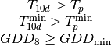
where  is the 10-day running mean of
is the 10-day running mean of  , (the simulated 2-m air
temperature during each model time step) and
, (the simulated 2-m air
temperature during each model time step) and  is
the 10-day running mean of
is
the 10-day running mean of  (the daily minimum of
).
(the daily minimum of
).  and
and  are crop-specific coldest planting temperatures
(Table 25.2),
are crop-specific coldest planting temperatures
(Table 25.2),  is the 20-year running mean growing
degree-days (units are degree-days or o days) tracked
from April through September (NH) above 8o C with
maximum daily increments of 30o days (see equation (3)), and
is the 20-year running mean growing
degree-days (units are degree-days or o days) tracked
from April through September (NH) above 8o C with
maximum daily increments of 30o days (see equation (3)), and
 is the minimum growing degree day requirement
(Table 25.2). does not change as quickly as and
is the minimum growing degree day requirement
(Table 25.2). does not change as quickly as and  , so
it determines whether it is warm enough for the crop to be planted in a grid cell, while the
2-m air temperature variables determine the day when the crop may be planted if the threshold is met.
If the requirements in equation (1) are not met by the maximum planting date,
crops are still planted on the maximum planting date as long as
, so
it determines whether it is warm enough for the crop to be planted in a grid cell, while the
2-m air temperature variables determine the day when the crop may be planted if the threshold is met.
If the requirements in equation (1) are not met by the maximum planting date,
crops are still planted on the maximum planting date as long as  . In
the southern hemisphere (SH) the NH requirements apply 6 months later.
. In
the southern hemisphere (SH) the NH requirements apply 6 months later.
At planting, each crop seed pool is assigned 3 gC m-2 from its
grain product pool. The seed carbon is transferred to the leaves upon leaf emergence. An
equivalent amount of seed leaf N is assigned given the pft’s C to N
ratio for leaves ( in Table 25.3; this differs from AgroIBIS,
which uses a seed leaf area index instead of seed C). The model updates the average growing degree-days necessary
for the crop to reach vegetative and physiological maturity,
in Table 25.3; this differs from AgroIBIS,
which uses a seed leaf area index instead of seed C). The model updates the average growing degree-days necessary
for the crop to reach vegetative and physiological maturity,
 , according to the following AgroIBIS rules:
, according to the following AgroIBIS rules:
(2)¶![\begin{array}{lll}
GDD_{{\rm mat}}^{{\rm corn,sugarcane}} =0.85 GDD_{{\rm 8}} & {\rm \; \; \; and\; \; \; }& 950 <GDD_{{\rm mat}}^{{\rm corn,sugarcane}} <1850{}^\circ {\rm days} \\
GDD_{{\rm mat}}^{{\rm spring\ wheat,cotton}} =GDD_{{\rm 0}} & {\rm \; \; \; and\; \; \; } & GDD_{{\rm mat}}^{{\rm spring\ wheat,cotton}} <1700{}^\circ {\rm days} \\
GDD_{{\rm mat}}^{{\rm temp.soy}} =GDD_{{\rm 10}} & {\rm \; \; \; and\; \; \; } & GDD_{{\rm mat}}^{{\rm temp.soy}} <1900{}^\circ {\rm days} \\
GDD_{{\rm mat}}^{{\rm rice}} =GDD_{{\rm 0}} & {\rm \; \; \; and\; \; \; } & GDD_{{\rm mat}}^{{\rm rice}} <2100{}^\circ {\rm days} \\
GDD_{{\rm mat}}^{{\rm trop.soy}} =GDD_{{\rm 10}} & {\rm \; \; \; and\; \; \; } & GDD_{{\rm mat}}^{{\rm trop.soy}} <2100{}^\circ {\rm days}
\end{array}](../../_images/math/4671b63bfe90bfa6243500ce71ac7f36cbca570e.png)
where  , , and
, , and  are the 20-year running mean growing
degree-days tracked from April through September (NH) over 0oC, 8oC, and
10oC, respectively, with maximum daily increments of
26odays (for ) or 30odays (for and ). Equation (3) shows how we calculate
, , and for each model timestep:
are the 20-year running mean growing
degree-days tracked from April through September (NH) over 0oC, 8oC, and
10oC, respectively, with maximum daily increments of
26odays (for ) or 30odays (for and ). Equation (3) shows how we calculate
, , and for each model timestep:
(3)¶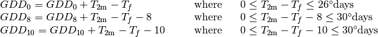
where, if -  takes on values
outside the above ranges within a day, then it equals the minimum or maximum value in
the range for that day. is the freezing temperature of water and equals 273.15 K,
is the 2-m air temperature in units of K, and GDD is in units of ºdays.
takes on values
outside the above ranges within a day, then it equals the minimum or maximum value in
the range for that day. is the freezing temperature of water and equals 273.15 K,
is the 2-m air temperature in units of K, and GDD is in units of ºdays.
25.2.3.2. Leaf emergence¶
According to AgroIBIS, leaves may emerge when the growing degree-days of
soil temperature to 0.05 m depth ( ), which is tracked since planting,
reaches 1 to 5% of
(see Phase 2 % in Table 25.2). The base temperature threshold values for
are listed in Table 25.2 (the same base temperature threshold values are also used for
), which is tracked since planting,
reaches 1 to 5% of
(see Phase 2 % in Table 25.2). The base temperature threshold values for
are listed in Table 25.2 (the same base temperature threshold values are also used for
 in section 25.2.3.3), and leaf emergence (crop phenology phase 2)
starts when this threshold is met. Leaf onset occurs in the first
time step of phase 2, at which moment all seed C is transferred to leaf
C. Subsequently, the leaf area index generally increases throughout phase 2 until it reaches
a predetermined maximum value. Stem and root C also increase throughout phase 2 based on
the carbon allocation algorithm in section 25.2.4.1.
in section 25.2.3.3), and leaf emergence (crop phenology phase 2)
starts when this threshold is met. Leaf onset occurs in the first
time step of phase 2, at which moment all seed C is transferred to leaf
C. Subsequently, the leaf area index generally increases throughout phase 2 until it reaches
a predetermined maximum value. Stem and root C also increase throughout phase 2 based on
the carbon allocation algorithm in section 25.2.4.1.
25.2.3.3. Grain fill¶
The grain fill phase (phase 3) begins in one of two ways. The first potential trigger is based on temperature, similar to phase 2. A variable tracked since
planting, similar to but for 2-m air temperature,
, must reach a heat unit threshold, h, of
of 40 to 65% of (see Phase 3 % in Table 25.2).
For crops with the C4 photosynthetic pathway (temperate and tropical corn, sugarcane),
the is based on an empirical function and ranges between 950 and 1850.
The second potential trigger for phase 3 is based on leaf area index.
When the maximum value of leaf area index is reached in phase 2 (Table 25.3), phase 3 begins.
In phase 3, the leaf area index begins to decline in
response to a background litterfall rate calculated as the inverse of
leaf longevity for the pft as done in the BGC part of the model.
25.2.3.4. Harvest¶
Harvest is assumed to occur as soon as the crop reaches maturity. When
reaches 100% of or
the number of days past planting reaches a crop-specific maximum
(Table 25.2), then the crop is harvested.
Harvest occurs in one time step using the BGC leaf offset algorithm.
| temperate corn | spring wheat | temperatue soybean | cotton | rice | sugarcane | tropical corn | tropical soybean | |
|---|---|---|---|---|---|---|---|---|
| IVT | 17, 18 | 19, 20 | 23, 24 | 41, 42 | 61, 62 | 67, 68 | 75, 76 | 77, 78 |
| April 1 | April 1 | May 1 | April 1 | Janurary 1 | Janurary 1 | March 20 | April 15 | |
| June 15 | June 15 | June 15 | May 31 | Feburary 28 | March 31 | April 15 | June 31 | |
 (K) (K) |
283.15 | 280.15 | 286.15 | 294.15 | 294.15 | 294.15 | 294.15 | 294.15 |
| 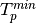(K) | 279.15 | 272.15 | 279.15 | 283.15 | 283.15 | 283.15 | 283.15 | 283.15 |
 (ºdays) (ºdays) |
50 | 50 | 50 | 50 | 50 | 50 | 50 | 50 |
| base temperature for GDD (ºC) | 8 | 0 | 10 | 10 | 10 | 10 | 10 | 10 |
| (ºdays) |
950-1850 |  1700 1700 |
1900 |
1700 |
2100 |
950-1850 | 950-1850 | 2100 |
| Phase 2 % |
0.03 | 0.05 | 0.03 | 0.03 | 0.01 | 0.03 | 0.03 | 0.03 |
| Phase 3 % |
0.65 | 0.6 | 0.5 | 0.5 | 0.4 | 0.65 | 0.5 | 0.5 |
| Harvest: days past planting | 165 |
150 |
150 |
160 |
150 |
300 |
160 |
150 |
 (m) (m) |
2.5 | 1.2 | 0.75 | 1.5 | 1.8 | 4 | 2.5 | 1 |
| SLA (m 2 leaf g -1 C) | 0.05 | 0.035 | 0.035 | 0.035 | 0.035 | 0.05 | 0.05 | 0.035 |
 index index |
-0.5 | -0.5 | -0.5 | -0.5 | -0.5 | -0.5 | -0.5 | -0.5 |
| grperc | 0.11 | 0.11 | 0.11 | 0.11 | 0.11 | 0.11 | 0.11 | 0.11 |
| flnr | 0.293 | 0.41 | 0.41 | 0.41 | 0.41 | 0.293 | 0.293 | 0.41 |
| fcur | 1 | 1 | 1 | 1 | 1 | 1 | 1 | 1 |
Notes: and are
the minimum and maximum planting date in the Northern Hemisphere, the corresponding dates
in the Southern Hemisphere apply 6 months later.
and are crop-specific coldest planting temperatures.
is the lowest (for planting) 20-year running mean growing degree-days based
on the base temperature threshold in the 7th row, tracked from April to September (NH).
is a crop’s 20-year running mean growing
degree-days needed for vegetative and physiological maturity. Harvest
occurs at 100% or when the days past planting
reach the number in the 11th row. Crop growth phases
are described in the text. is the maximum
top-of-canopy height of a crop, SLA is specific leaf area. is the leaf
orientation index, equals -1 for vertical, 0 for
random, and 1 for horizontal leaf orientation.
grperc is the growth respiration factor. flnr is the fraction of leaf N in the Rubisco enzyme.
fcur is the fraction of allocation that goes to currently displayed growth.
25.2.4. Allocation¶
Allocation changes based on the crop phenology phases phenology (section 25.2.3). Simulated C assimilation begins every year upon leaf emergence in phase 2 and ends with harvest at the end of phase 3; therefore, so does the allocation of such C to the crop’s leaf, live stem, fine root, and reproductive pools.
Typically, C:N ratios in plant tissue vary throughout the growing season and tend to be lower during early growth stages and higher in later growth stages. In order to account for this seasonal change, two sets of C:N ratios are established in CLM for the leaf, stem, and fine root of crops: one during the leaf emergence phase (phenology phase 2), and a second during grain fill phase (phenology phase 3). This modified C:N ratio approach accounts for the nitrogen retranslocation that occurs during the grain fill phase (phase 3) of crop growth. Leaf, stem, and root C:N ratios for phase 2 are calculated using the new CLM5 carbon and nitrogen allocation scheme (Chapter 19), which provides a target C:N value (Table 25.3) and allows C:N to vary through time. During grain fill (phase 3) of the crop growth cycle, a portion of the nitrogen in the plant tissues is moved to a storage pool to fulfill nitrogen demands of organ (reproductive pool) development, such that the resulting C:N ratio of the plant tissue is reflective of measurements at harvest. All C:N ratios were determined by calibration process, through comparisons of model output versus observations of plant carbon throughout the growing season.
The BGC part of the model keeps track of a term representing excess maintenance respiration, which supplies the carbon required for maintenance respiration during periods of low photosynthesis (Chapter 17). Carbon supply for excess maintenance respiration cannot continue to happen after harvest for annual crops, so at harvest the excess respiration pool is turned into a flux that extracts CO2 directly from the atmosphere. This way any excess maintenance respiration remaining at harvest is eliminated as if such respiration had not taken place.
25.2.4.1. Leaf emergence¶
During phase 2, the allocation coefficients (fraction of available C) to each C pool are defined as:
(4)¶
where  ,
,  , and
, and
 are initial and final values of these
coefficients (Table 25.3), and h is a heat unit threshold defined in
section 25.2.3.3. At a crop-specific maximum leaf area index,
are initial and final values of these
coefficients (Table 25.3), and h is a heat unit threshold defined in
section 25.2.3.3. At a crop-specific maximum leaf area index,
 (Table 25.3), carbon allocation is directed
exclusively to the fine roots.
(Table 25.3), carbon allocation is directed
exclusively to the fine roots.
25.2.4.2. Grain fill¶
The calculation of  remains the same from phase 2 to
phase 3. During grain fill (phase 3), other allocation coefficients change to:
remains the same from phase 2 to
phase 3. During grain fill (phase 3), other allocation coefficients change to:
(5)¶![\begin{array}{ll}
a_{leaf} =a_{leaf}^{i,3} & {\rm when} \quad a_{leaf}^{i,3} \le a_{leaf}^{f} \quad {\rm else} \\
a_{leaf} =a_{leaf} \left(1-\frac{GDD_{T_{{\rm 2m}} } -h}{GDD_{{\rm mat}} d_{L} -h} \right)^{d_{alloc}^{leaf} } \ge a_{leaf}^{f} & {\rm where} \quad \frac{GDD_{T_{{\rm 2m}} } -h}{GDD_{{\rm mat}} d_{L} -h} \le 1 \\
\\
a_{livestem} =a_{livestem}^{i,3} & {\rm when} \quad a_{livestem}^{i,3} \le a_{livestem}^{f} \quad {\rm else} \\
a_{livestem} =a_{livestem} \left(1-\frac{GDD_{T_{{\rm 2m}} } -h}{GDD_{{\rm mat}} d_{L} -h} \right)^{d_{alloc}^{stem} } \ge a_{livestem}^{f} & {\rm where} \quad \frac{GDD_{T_{{\rm 2m}} } -h}{GDD_{{\rm mat}} d_{L} -h} \le 1 \\
\\
a_{repr} =1-a_{froot} -a_{livestem} -a_{leaf}
\end{array}](../../_images/math/7170d08c947956595200e3554451adc228e40aa0.png)
where  and
and  (initial
values) equal the last
(initial
values) equal the last  and
and  calculated in phase 2,
calculated in phase 2,  ,
,  and
and
 are leaf area index and leaf and stem
allocation decline factors, and
are leaf area index and leaf and stem
allocation decline factors, and  and
and
 are final values of these allocation
coefficients (Table 25.3).
are final values of these allocation
coefficients (Table 25.3).
25.2.4.3. Nitrogen retranslocation for crops¶
Nitrogen retranslocation in crops occurs when nitrogen that was used for tissue growth of leaves, stems, and fine roots during the early growth season is remobilized and used for grain development (Pollmer et al. 1979, Crawford et al. 1982, Simpson et al. 1983, Ta and Weiland 1992, Barbottin et al. 2005, Gallais et al. 2006, Gallais et al. 2007). Nitrogen allocation for crops follows that of natural vegetation, is supplied in CLM by the soil mineral nitrogen pool, and depends on C:N ratios for leaves, stems, roots, and organs. Nitrogen demand during organ development is fulfilled through retranslocation from leaves, stems, and roots. Nitrogen retranslocation is initiated at the beginning of the grain fill stage for all crops except soybean, for which retranslocation is after LAI decline. Nitrogen stored in the leaf and stem is moved into a storage retranslocation pool for all crops, and for wheat and rice, nitrogen in roots is also released into the retranslocation storage pool. The quantity of nitrogen mobilized depends on the C:N ratio of the plant tissue, and is calculated as
(6)¶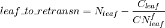
(7)¶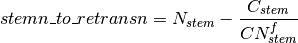
(8)¶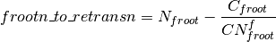
where  ,
,  , and
, and  is the carbon in the plant leaf, stem, and fine
root, respectively, 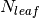, , and
is the nitrogen in the plant leaf, stem, and fine root, respectively, and
is the carbon in the plant leaf, stem, and fine
root, respectively, 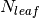, , and
is the nitrogen in the plant leaf, stem, and fine root, respectively, and  ,
,
 , and
, and  is the post-grain fill C:N
ratio of the leaf, stem, and fine root respectively (Table 25.3). Since
C:N measurements are often taken from mature crops, pre-grain development C:N
ratios for leaves, stems, and roots in the model are optimized to allow maximum
nitrogen accumulation for later use during organ development, and post-grain
fill C:N ratios are assigned the same as crop residue. After
nitrogen is moved into the retranslocated pool,
the nitrogen in this pool is used to meet plant
nitrogen demand by assigning the available nitrogen from the
retranslocated pool equal to the plant nitrogen demand for each organ ( in Table 25.3). Once the
retranslocation pool is depleted, soil mineral nitrogen pool is used to
fulfill plant nitrogen demands.
is the post-grain fill C:N
ratio of the leaf, stem, and fine root respectively (Table 25.3). Since
C:N measurements are often taken from mature crops, pre-grain development C:N
ratios for leaves, stems, and roots in the model are optimized to allow maximum
nitrogen accumulation for later use during organ development, and post-grain
fill C:N ratios are assigned the same as crop residue. After
nitrogen is moved into the retranslocated pool,
the nitrogen in this pool is used to meet plant
nitrogen demand by assigning the available nitrogen from the
retranslocated pool equal to the plant nitrogen demand for each organ ( in Table 25.3). Once the
retranslocation pool is depleted, soil mineral nitrogen pool is used to
fulfill plant nitrogen demands.
25.2.4.4. Harvest¶
Variables track the flow of grain C and N to food and of all other plant pools, including live stem C and N, to litter. Putting live stem C and N into the litter pool is in contrast to the approach for unmanaged PFTs which puts live stem C and N into dead stem pools first. Leaf and root C and N pools are routed to the litter pools in the same manner as natural vegetation. Whereas food C and N was formerly transferred to the litter pool, CLM5 routes food C and N to a grain product pool where the C and N decay to the atmosphere over one year, similar in structure to the wood product pools. Additionally, CLM5 accounts for the C and N required for crop seeding by removing the seed C and N from the grain product pool during harvest. The crop seed pool is then used to seed crops in the subsequent year. Calcuating the crop yields (Equation (9)) requires that you sum the GRAINC_TO_FOOD variable for each year, and must account for the proportion of C in the dry crop weight. Here, we assume that grain C is 45% of the total dry weight. Additionally, harvest is not typically 100% efficient, so analysis needs to assume that harvest efficiency is less. We assume a harvest efficiency of 85%.
(9)¶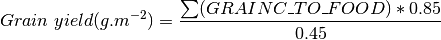
| temperate corn | spring wheat | temperatue soybean | cotton | rice | sugarcane | tropical corn | tropical soybean | |
|---|---|---|---|---|---|---|---|---|
| IVT | 17, 18 | 19, 20 | 23, 24 | 41, 42 | 61, 62 | 67, 68 | 75, 76 | 77, 78 |
|
0.8 | 0.9 | 0.85 | 0.85 | 0.75 | 0.8 | 0.8 | 0.85 |
| (m 2 m -2) |
5 | 7 | 6 | 6 | 7 | 5 | 5 | 6 |
|
0.4 | 0.1 | 0.2 | 0.2 | 0.1 | 0.4 | 0.4 | 0.2 |
|
0.05 | 0 | 0.2 | 0.2 | 0 | 0.05 | 0.05 | 0.2 |
|
0 | 0 | 0 | 0 | 0 | 0 | 0 | 0 |
|
0 | 0.05 | 0.3 | 0.3 | 0.05 | 0 | 0 | 0.3 |
|
1.05 | 1.05 | 1.05 | 1.05 | 1.05 | 1.05 | 1.05 | 1.05 |
|
2 | 1 | 5 | 5 | 1 | 2 | 2 | 5 |
|
5 | 3 | 2 | 2 | 3 | 5 | 5 | 2 |
|
25 | 20 | 20 | 20 | 20 | 25 | 25 | 20 |
 |
50 | 50 | 50 | 50 | 50 | 50 | 50 | 50 |
 |
42 | 42 | 42 | 42 | 42 | 42 | 42 | 42 |
|
65 | 65 | 65 | 65 | 65 | 65 | 65 | 65 |
|
120 | 100 | 130 | 130 | 100 | 120 | 120 | 130 |
|
0 | 40 | 0 | 0 | 40 | 0 | 0 | 0 |
| 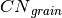 | 50 | 50 | 50 | 50 | 50 | 50 | 50 | 50 |
Notes: Crop growth phases and corresponding variables are described throughout
the text. , , and are
the target C:N ratios used during the leaf emergence phase (phase 2).
25.2.5. Other Features¶
25.2.5.1. Physical Crop Characteristics¶
Leaf area index (L) is calculated as a function of specific leaf area (SLA, Table 25.2) and leaf C. Stem area index (S) is equal to 0.1L for temperate and tropical corn and sugarcane and 0.2L for other crops, as in AgroIBIS. All live C and N pools go to 0 after crop harvest, but the S is kept at 0.25 to simulate a post-harvest “stubble” on the ground.
Crop heights at the top and bottom of the canopy,  and
and  (m), come from the AgroIBIS formulation:
(m), come from the AgroIBIS formulation:
(10)¶
where is the maximum top-of-canopy height of the crop (Table 25.2)
and is the maximum leaf area index (Table 25.3).
25.2.5.2. Interactive Fertilization¶
CLM simulates fertilization by adding nitrogen directly to the soil mineral nitrogen pool to meet crop nitrogen demands using both industrial fertilizer and manure application. CLM’s separate crop land unit ensures that natural vegetation will not access the fertilizer applied to crops. Fertilizer in CLM5BGCCROP is prescribed by crop functional types and varies spatially for each year based on the LUMIP land use and land cover change time series (LUH2 for historical and SSPs for future) (Lawrence et al. 2016). One of two fields is used to prescribe industrial fertilizer based on the type of simulation. For non-transient simulations, annual fertilizer application in g N/m2/yr is specified on the land surface data set by the field CONST_FERTNITRO_CFT. In transient simulations, annual fertilizer application is specified on the land use time series file by the field FERTNITRO_CFT, which is also in g N/m2/yr. The values for both of these fields come from the LUMIP time series for each year. In addition to the industrial fertilizer, background manure fertilizer is specified on the parameter file by the field ‘manunitro’. For the current CLM5BGCCROP, manure N is applied at a rate of 0.002 kg N/m2/yr. Because previous versions of CLM (e.g., CLM4) had rapid denitrification rates, fertilizer is applied slowly to minimize N loss (primarily through denitrification) and maximize plant uptake. The current implementation of CLM5 inherits this legacy, although denitrification rates are slower in the current version of the model (Koven et al. 2013). As such, fertilizer application begins during the leaf emergence phase of crop development (phase 2) and continues for 20 days, which helps reduce large losses of nitrogen from leaching and denitrification during the early stage of crop development. The 20-day period is chosen as an optimization to limit fertilizer application to the emergence stage. A fertilizer counter in seconds, f, is set as soon as the leaf emergence phase for crops initiates:
(11)¶
where n is set to 20 fertilizer application days and 86400 is the number of seconds per day. When the crop enters phase 2 (leaf emergence) of its growth cycle, fertilizer application begins by initializing fertilizer amount to the total fertilizer at each column within the grid cell divided by the initialized f. Fertilizer is applied and f is decremented each time step until a zero balance on the counter is reached.
25.2.5.3. Biological nitrogen fixation for soybeans¶
Biological N fixation for soybeans is calculated by the fixation and uptake of nitrogen module (Chapter 18) and is the same as N fixation in natural vegetation. Unlike natural vegetation, where a fraction of each pft are N fixers, all soybeans are treated as N fixers.
25.2.5.4. Latitudinal variation in base growth tempereature¶
For most crops, (growing degree days since planting)
is the same in all locations. However,
the for both rainfed and irrigated spring wheat and sugarcane, the calculation of
allows for latitudinal variation:
(12)¶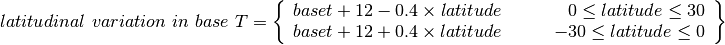
where is the base temperature for GDD (7th row) in Table 25.2.
Such latitudinal variation in base growth temperature could increase the base temperature, slow down
accumulation, and extend the growing season for regions within 30ºS to 30ºN for spring wheat
and sugarcane.
25.2.5.5. Separate reproductive pool¶
One notable difference between natural vegetation and crops is the presence of reproductive carbon and nitrogen pools. Accounting for the reproductive pools helps determine whether crops are performing reasonably through yield calculations. The reproductive pool is maintained similarly to the leaf, stem, and fine root pools, but allocation of carbon and nitrogen does not begin until the grain fill stage of crop development. Equation (5) describes the carbon and nitrogen allocation coefficients to the reproductive pool. In CLM5BGCCROP, as allocation declines in stem, leaf, and root pools (see section 25.2.4.2) during the grain fill stage of growth, increasing amounts of carbon and nitrogen are available for grain development.
25.3. The irrigation model¶
The CLM includes the option to irrigate cropland areas that are equipped for irrigation. The application of irrigation responds dynamically to the soil moisture conditions simulated by the CLM. This irrigation algorithm is based loosely on the implementation of Ozdogan et al. (2010).
When irrigation is enabled, the crop areas of each grid cell are divided into irrigated and rainfed fractions according to a dataset of areas equipped for irrigation (Portmann et al. 2010). Irrigated and rainfed crops are placed on separate soil columns, so that irrigation is only applied to the soil beneath irrigated crops.
In irrigated croplands, a check is made once per day to determine
whether irrigation is required on that day. This check is made in the
first time step after 6 AM local time. Irrigation is required if crop
leaf area  0, and the available soil water is below a specified
threshold.
0, and the available soil water is below a specified
threshold.
The soil moisture deficit  is
is
(13)¶
where  is the irrigation moisture threshold (mm) and
is the irrigation moisture threshold (mm) and
 is the available moisture (mm). The moisture threshold
is
is the available moisture (mm). The moisture threshold
is
(14)¶
where  is the irrigation target soil moisture (mm)
is the irrigation target soil moisture (mm)
(15)¶
 is the wilting point soil moisture (mm)
is the wilting point soil moisture (mm)
(16)¶
and  is a tuning parameter. The available moisture in
the soil is
is a tuning parameter. The available moisture in
the soil is
(17)¶
 is the index of the soil layer corresponding to a specified
depth
is the index of the soil layer corresponding to a specified
depth  (Table 25.4) and
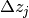 is the thickness of the soil layer in layer
(Table 25.4) and
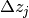 is the thickness of the soil layer in layer  (section
2.2).
(section
2.2).  is the
volumetric soil moisture in layer (section 7.3).
is the
volumetric soil moisture in layer (section 7.3).
 and
and
 are the target and wilting point volumetric
soil moisture values, respectively, and are determined by inverting
(53) using soil matric
potential parameters
are the target and wilting point volumetric
soil moisture values, respectively, and are determined by inverting
(53) using soil matric
potential parameters  and
and  (Table 25.4). After the soil moisture deficit
is calculated, irrigation in an amount equal to
(Table 25.4). After the soil moisture deficit
is calculated, irrigation in an amount equal to
 (mm/s) is applied uniformly over
the irrigation period
(mm/s) is applied uniformly over
the irrigation period  (s). Irrigation water is applied
directly to the ground surface, bypassing canopy interception (i.e.,
added to
(s). Irrigation water is applied
directly to the ground surface, bypassing canopy interception (i.e.,
added to  : section 7.1).
: section 7.1).
To conserve mass, irrigation is removed from river water storage (Chapter 14). When river water storage is inadequate to meet irrigation demand, there are two options: 1) the additional water can be removed from the ocean model, or 2) the irrigation demand can be reduced such that river water storage is maintained above a specified threshold.
| Parameter | |
|---|---|
|
1.0 |
| (m) |
0.6 |
| (mm) |
-3400 |
| (mm) |
-150000 |